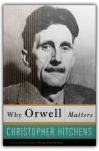
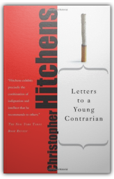
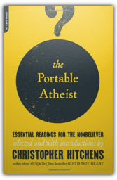
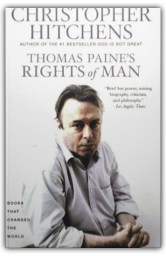
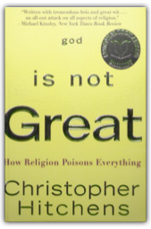
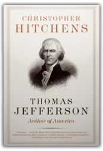
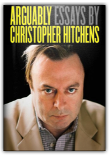
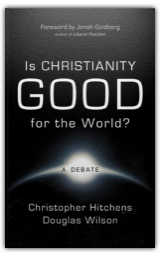
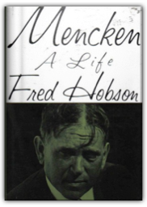
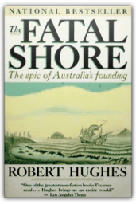

Recipient of the Nobel Peace Prize, feted by politicians, the Church and the world's media, Mother Teresa of Calcutta appears to be on the fast track to sainthood. But what, asks Christopher Hitchens, makes Mother Teresa so divine?In a frank expose of the Teresa cult, Hitchens details the nature and limits of one woman's mission to the world's poor. He probes the source of the heroic status bestowed upon an Albanian nun whose only declared wish is to serve God. He asks whether Mother Teresa's good works answer any higher purpose than the need of the world's privileged to see someone, somewhere, doing something for the Third World. He unmasks pseudo-miracles, questions Mother Teresa's fitness to adjudicate on matters of sex and reproduction, and reports on a version of saintly ubiquity which affords genial relations with dictators, corrupt tycoons and convicted frauds.
A devastating indictment of a man whose ambition and ruthlessness have directly resulted in both individual murders and widespread, indiscriminate slaughter.Drawing on first-hand testimony, previously unpublished documentation and broad sweeps through material released under the Freedom of Information Act, Christopher Hitchens mounts a devastating indictment of a man whose ambition and ruthlessness have directly resulted in both individual murders and widespread, indiscriminate slaughter.

Why Orwell Matters
Christopher Hitchens
In this widely acclaimed biographical essay, Christopher Hitchens assesses the life, the achievements, and the myth of the great political writer and participant George Orwell. In true emulative and contrarian style, Hitchens is both admiring and aggressive, sympathetic yet critical, taking true measure of his subject as hero and problem. Answering both the detractors and the false claimants, Hitchens tears down the façade of sainthood erected by the hagiographers and rebuts the critics point by point. He examines Orwell and his perspectives on fascism, empire, feminism, and Englishness, as well as his outlook on America, a country and culture towards which he exhibited much ambivalence. Whether thinking about empires or dictators, race or class, nationalism or popular culture, Orwell's moral outlook remains indispensable in a world that has undergone vast changes in the fifty years since his death. Combining the best of Hitchens's polemical punch and intellectual elegance in a tightly woven and subtle argument, this book addresses not only why Orwell matters today, but how he will continue to matter in a future, uncertain world.Christopher Hitchens, one of the most incisive minds of our own age, meets Orwell on the page in this provocative encounter of wit, contention and moral truth.

Letters to a Young Contrarian
Christopher Hitchens
In the book that he was born to write, provocateur and best-selling author Christopher Hitchens inspires future generations of radicals, gadflies, mavericks, rebels, angry young (wo)men, and dissidents. Who better to speak to that person who finds him or herself in a contrarian position than Hitchens, who has made a career of disagreeing in profound and entertaining ways.This book explores the entire range of "contrary positions"-from noble dissident to gratuitous pain in the butt. In an age of overly polite debate bending over backward to reach a happy consensus within an increasingly centrist political dialogue, Hitchens pointedly pitches himself in contrast. He bemoans the loss of the skills of dialectical thinking evident in contemporary society. He understands the importance of disagreement-to personal integrity, to informed discussion, to true progress-heck, to democracy itself. Epigrammatic, spunky, witty, in your face, timeless and timely, this book is everything you would expect from a mentoring contrarian.

The Portable Atheist: Essential Readings for the Nonbeliever
Christopher Hitchens
From the #1 New York Times best-selling author of God Is Not Great, a provocative and entertaining guided tour of atheist and agnostic thought through the ages—with never-before-published pieces by Salman Rushdie, Ian McEwan, and Ayaan Hirsi Ali.Christopher Hitchens continues to make the case for a splendidly godless universe in this first-ever gathering of the influential voices—past and present—that have shaped his side of the current (and raging) God/no-god debate. With Hitchens as your erudite and witty guide, you’ll be led through a wealth of philosophy, literature, and scientific inquiry, including generous portions of the words of Lucretius, Benedict de Spinoza, Charles Darwin, Karl Marx, Mark Twain, George Eliot, Bertrand Russell, Emma Goldman, H. L. Mencken, Albert Einstein, Daniel Dennett, Sam Harris, Richard Dawkins, and many others well-known and lesser known. And they’re all set in context and commented upon as only Christopher Hitchens—political and literary journalist extraordinaire” (Los Angeles Times)—can. Atheist? Believer? Uncertain? No matter: The Portable Atheist will speak to you and engage you every step of the way.

Thomas Paine's Rights of Man
Christopher Hitchens
Christopher Hitchens, the #1New York Timesbest-selling author ofGod Is Not Greathas been called a Tom Paine for our times, and in this addition to the Books that Changed the World Series, he vividly introduces Paine and hisDeclaration of the Rights of Man, the world’s foremost defense of democracy. Inspired by his outrage at Edmund Burke’s attack on the French Revolution, Paine’s text is a passionate defense of man’s inalienable rights, and the key to his reputation. Ever since the day of publication in 1791,Declaration of the Rights of Manhas been celebrated, criticized, maligned, suppressed, and co-opted, but inThomas Paine’s Rights of Man, Hitchens marvels at its forethought and revels in its contentiousness. Famous as a polemicist and provocative commentator, Hitchens is a political descendent of the great pamphleteer. In this engaging work he demonstrates how Thomas Paine’s book forms the philosophical cornerstone of the United States of America, and how in a time when both rights and reason are under attack, the life and writing of Thomas Paine will always be part of the arsenal on which we shall need to depend.” |

God Is Not Great: How Religion Poisons Everything
Christopher Hitchens
In the tradition of Bertrand Russell's Why I Am Not a Christian and Sam Harris's recent bestseller, The End of Faith, Christopher Hitchens makes the ultimate case against religion. With a close and erudite reading of the major religious texts, he documents the ways in which religion is a man-made wish, a cause of dangerous sexual repression, and a distortion of our origins in the cosmos. With eloquent clarity, Hitchens frames the argument for a more secular life based on science and reason, in which hell is replaced by the Hubble Telescope's awesome view of the universe, and Moses and the burning bush give way to the beauty and symmetry

Thomas Jefferson: Author of America
Christopher Hitchens
In this unique biography of Thomas Jefferson, leading journalist and social critic Christopher Hitchens offers a startlingly new and provocative interpretation of our Founding Father—a man conflicted by power who wrote the Declaration of Independence and acted as ambassador to France yet yearned for a quieter career in the Virginia legislature. A masterly writer, Jefferson was an awkward public speaker. A professed proponent of emancipation, he elided the issue of slavery from the Declaration of Independence and continued to own human property. A reluctant candidate, he left an indelible presidential legacy. With intelligence, insight, eloquence, and wit, Hitchens gives us an artful portrait of a complex, formative figure and his turbulent era.

Arguably: Essays by Christopher Hitchens
Christopher Hitchens
"All first-rate criticism first defines what we are confronting," the late, great jazz critic Whitney Balliett once wrote. By that measure, the essays of Christopher Hitchens are in the first tier. For nearly four decades, Hitchens has been telling us, in pitch-perfect prose, what we confront when we grapple with first principles-the principles of reason and tolerance and skepticism that define and inform the foundations of our civilization-principles that, to endure, must be defended anew by every generation.

Is Christianity Good for the World?
Christopher Hitchens, Douglas Wilson
Put two contrarians together and shake well. -Christianity Today The gloves come off in this electric exchange, originally hosted by Christianity Today, as leading atheist Christopher Hitchens (author of God Is Not Great) and Christian apologist Douglas Wilson (author of Letter from a Christian Citizen) go head-to-head on this divisive question. The result is entertaining and provocative-a glimpse into the ongoing debate.

Mencken: A Life
Fred Hobson
Using material available for the first time—including letters, diaries, and personal papers—the author of Serpent in Eden: H. L. Mencken and the South offers a candid portrait of the American literary legend. 20,000 first printing. Tour.
World War I stands as one of history’s most senseless spasms of carnage. In a riveting, suspenseful narrative with haunting echoes for our own time, Adam Hochschild brings it to life as never before. He focuses on the long-ignored moral drama of the war’s critics, alongside its generals and heroes. Thrown in jail for their opposition to the war were Britain’s leading investigative journalist, a future winner of the Nobel Prize for Literature, and an editor who, behind bars, published a newspaper for his fellow inmates on toilet paper. These critics were sometimes intimately connected to their enemy hawks: one of Britain’s most prominent women pacifist campaigners had a brother who was commander in chief on the Western Front. Two well-known sisters split so bitterly over the war that they ended up publishing newspapers that attacked each other.

The Fatal Shore: The Epic of Australia's Founding
Robert Hughes
The history of the birth of Australia which came out of the suffereing and brutality of England's infamous convict transportation system. With 16 pages of illustrations and 3 maps. |

Fogus
Collection Total:
193 Items
193 Items
Last Updated:
Dec 16, 2011
Dec 16, 2011

 Made with Delicious Library
Made with Delicious Library